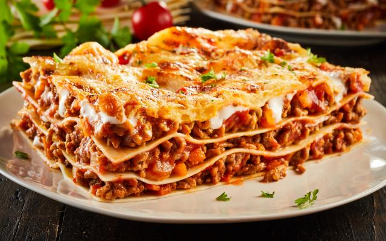

Lasagna

Description
The ground beef lasagna recipe is a classic dish, much loved and very easy to prepare. Also known as Bolognese lasagna, due to its origin in Bologna, Italy, this recipe has conquered the world! This dish is a true celebration of flavors, with alternating layers of pasta, ground beef sauce, and melted cheese, resulting in a delicious and irresistible combination!
Ingredients
- 500 g of lasagna noodles
- 500 g of ground beef
- 2 boxes of heavy cream
- 3 tablespoons of butter
- 3 tablespoons of flour
- 500 g of ham
- 500 g of mozzarella
- salt to taste
- 2 cups of milk
- 1 grated onion
- 3 tablespoons of oil
- 1 box of tomato sauce
- 3 cloves of garlic, crushed
- 1 package of grated cheese
Steps
- Lasagna
- Cook the noodles according to the manufacturer's instructions, place them in a dish with cold water to prevent sticking, and set aside.
- Bolognese sauce
- Sauté the garlic, onion, ground beef, and tomato sauce, let it cook for 3 minutes, and set aside.
- White sauce
- Melt the butter, add the 3 tablespoons of flour, and stir.
- Gradually pour in the milk while continuing to stir.
- Finally, add the heavy cream, stir for 1 minute, and turn off the heat.
- Assembly
- Pour part of the Bolognese sauce into a baking dish, add half of the noodles, half of the ham, half of the mozzarella, all of the white sauce, and the remaining noodles.
- Repeat the layers up to the top of the dish.
- Finish with the grated cheese and bake in a preheated oven at high temperature (220°C) for about 20 minutes.